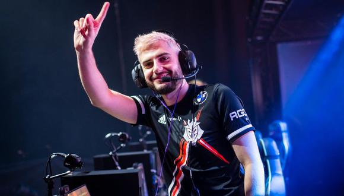
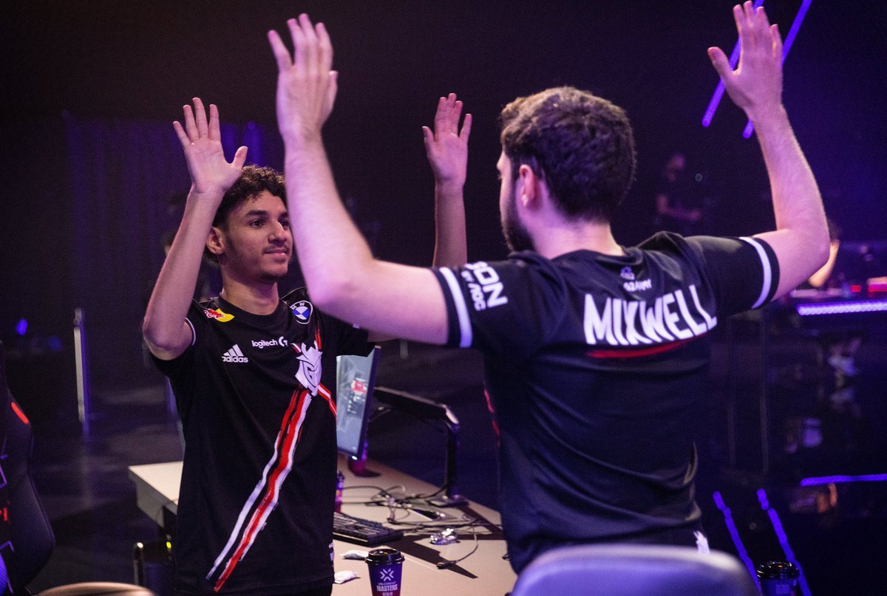

¿Quién es Mixwell?
Óscar Cañellas, o mejor conocido, Mixwell, es el jugador más prominente de Valorant en España en la actualidad. Tras triunfar internacionalmente en Counter-Strike: Global Offensive, decidió dar el salto al shooter de Riot Games cuando salió y se ha convertido en uno de los grandes referentes tanto en la creación de contenido como en su faceta de jugador profesional, ya que es el capitán de G2 Esports, el equipo más exitoso de los primeros meses.
P: Antes de nada Mixwell, te agradecemos enormemente que nos hayas podido recibir. Sabemos que actualmente estáis a punto de clasificaros para el Mundial. ¿Cómo está yendo el 2022?
R: Para nada, el placer es mío. Bueno el 2022 está siendo una montaña rusa para mí. Comencé el año en el banquillo. Perdimos los dos primeros partidos y me mandaron a suplencia. En ese momento sentí que debía empezar a buscar otro equipo, para que te hagas una idea. Fue muy duro y no me lo esperaba para nada, me quedé en shock.
P: Hubo mucho revuelo cuando toda la comunidad, sobre todo la española, se enteró de esta noticia. Desde fuera no lo podíamos creer pero parece que la situación ha mejorado.
R: Me remplazó Keloqz, que ahora mismo está en Heretics, y bueno después de un tiempo, G2 consideró que a largo plazo era mejor para el equipo que volviese a la titularidad. Entonces, volví y conseguimos clasificarnos para Islandia. Así que podríamos decir que la decisión ha sido buena deportivamente hablando.
P: Siguiendo con este tema, ¿consideras que la decisión de G2 fue acertada o viendo lo que pasó luego, dirías que se equivocaron?
R: Yo creo que, después de verlo y reflexionar, creo que asumí demasiado responsabilidades dentro del equipo. Tenía que hacer de IGL (el líder del equipo, quién realiza las calls) y a su vez, tuve que jugar de dualista que se trata de un rol muy agresivo. Entonces, era muy difícil en determinadas situaciones realizar estos dos tipos de roles ya que jugar como dualista suponía aprender de nuevo un rol totalmente distinto al que yo tenía.
Entonces, jugamos dos partidos que perdimos y donde jugamos realmente mal, personalmente jugué muy mal y el equipo decidió que era mejor contar con un jugador cuyo rol principal fuese dualista.
Yo creo que bajé mi nivel y que por tanto, es una decisión totalmente acertada. A nivel de comunidad fue totalmente una locura.
P: Como te decía, desde fuera, lo percibíamos como algo inexplicable. Provocó un revuelo en las redes y unos niveles de toxicidad hacía Keloqz que bueno... ya sabes como son las redes. De hecho tuviste que hacer un vídeo pidiendo que toda esta situación parase. ¿Cómo viviste tu la reacción de la comunidad?
R: Como tu dices, la comunidad que gira alrededor mía es, por suerte o por desgracia, muy grande. Cuando salió la noticia pues buscaban a un culpable que en este caso la diana fue Keloqz, que no tiene nada que ver con la decisión del equipo. Tanto él como mis compañeros recibieron una cantidad de 'hate' que me pareció muy triste.
Obviamente, agradecía el apoyo de toda la comunidad pero no eran las formas que yo quería ver en mi comunidad. Entonces decidí hacer un vídeo en el que decía que si dabas 'hate' no quería que representarás mi comunidad. Porque una cosa es apoyar a alguien y otra es atacar a los demás.
P: Y para ti Mixwell, todo este tema de la suplencia, ¿Cómo la pudiste gestionar? ¿Consideraste que fue un ataque a tu ego o simplemente dijiste 'vale, vamos a trabajar para que esto no vuelva a pasar?
R: Yo lo dije en mi stream, con la edad vas madurando y gestionar determinadas situaciones de distintas formas más calmadas. Esto me pilla con 17 años y me lo tomaría mal, muy mal.
He sido muy crío cuando era más joven y he tenido muchos problemas por mi ego en mis equipos. Por ejemplo, en mis primeros años de carrera, gané 2 Superligas seguidas y a la tercera iba con gafas de sol y bañador para jugar la final porque sabía que iba a ganar.
Está bien confiar en ti mismo pero tampoco de sea manera. Entonces, me sentó mal al principio pero bueno, me iba bien en stream y había creado una comunidad que apoyaba. Total, que al día siguiendo estuve stremeando 8 horas con el contexto de volver a competir. La única manera de volver al equipo era trabajar, trabajar y trabajar. Solo de esa manera podría demostrar al equipo que habían tomado una mala decisión.
"La única manera de volver al equipo era trabajar, trabajar y trabajar. Solo de esa manera podría demostrar al equipo que habían tomado una mala decisión"
P: Vamos a un tema más agradable. Tu vienes de competir profesionalmente en CS:GO pero decidiste apostar por Valorant. ¿Qué supuso este cambio?
R: Empecé a probar el juego y dije 'esto está guapo'. Jugaba por diversión pero sabía que el juego iba a triunfar. Simplemente stremeando este juego llegué a 20.000 viewers.
Yo estaba en una época, en la que el CS:GO ya me desmotivaba y el Valorant había salido en el momento justo. Me había tomado un descanso y probablemente si Valorant no hubiese salido, hubiese vuelto al CS:GO.
Por supuesto, como dije, llegó en el momento justo, a tal punto de que estuve stremeando 3 meses seguidos, 10 horas al día. Y lo mejor de todo es que lo disfrutaba. Veía que a la vez que el juego crecía, la comunidad que me rodeaba también lo hacía. Y eso quieras o no, supone un punto de motivación para seguir. En CS:GO eso es imposible.
P: Por lo que percibo desde fuera, la comunidad española de Valorant está muy centrado en ti. Y esto lo digo porque en la última Iberian Cup de LOL, tu estabas ahí y el público cuando te vio empezó a corear tu nombre. ¿Qué sientes cuando ves estas cosas?
R: No te voy a engañar, es algo que me hace muy feliz. Ni yo me esperaba mover a toda esta comunidad. Además, con el tiempo, creo que estoy preparado para gestionar todo este impacto.
Tengo la suerte de sentir que sigo siendo la misma persona, de que tengo los pies en la tierra pero reconozco que ese día se me puso todo los pelos de punta.
Es una locura, la gente me trata super bien y es algo que me alegra muchísimo. En Gamergy por ejemplo, estuve 8 horas firmando autógrafos por la cola que había, fue una locura.
P: Con todo este impacto, ¿no sientes ninguna presión?
R: A veces si, tengo que reconocerlo. La gente espera de ti que siempre seas lo más top. Y yo lo he dicho, mi comunidad no la baso en si soy bueno, si no en lo que puedo entretener.
Por eso intento, que la gente que me siga, lo haga por mi persona. Intento hacer que la gente siga más mi vida privada y conozca más de Mixwell.
Y eso lo noto mucho, porque siento que la gente no me sigue solo por ser buen jugador si no por conocer a Óscar.
P: Por último, ¿Qué esperas de Valorant en los próximos años?
R: Solo espero que Riot Games siga apostando por el juego como lo está haciendo ahora. Y obviamente, espero que competitivamente hablando, sean meses o años de alegrías tanto para mi como para el equipo.
P: Ha sido un placer Mixwell, desde el equipo de DROP te deseamos los mejores éxitos y que sepas que somos fan tuyos.
R: El placer es mío. Espero que para la próxima entrevista sea con un trofeo entre mis brazos.